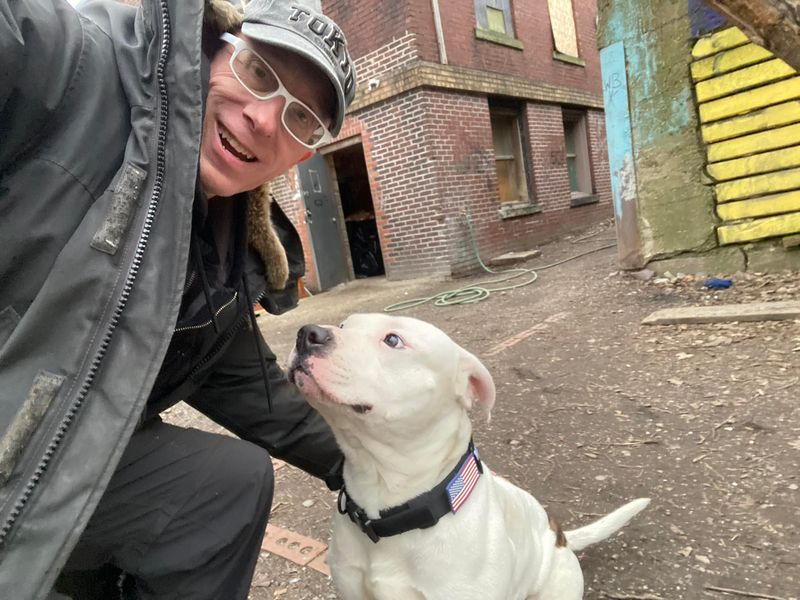

Mobile uploads
I went over to see my friend, Nino the dog.
I know some of you were worried about him from yesterday’s post.
He’s never been better!
Nino has multiple places to live and get warm. He had just gotten out of his gate and was checking things out at the building during that video.
I made the point yesterday that some of us care more about the well-being of dogs than humans. The response was: dogs don’t have a choice.
That’s largely true. Dogs get the family and house they get. And that’s pretty much that.
It’s admirable that you can see that truth. That the free will of dogs is pretty narrow.
What isn’t as admirable is that you can’t seem to see very similar narrow options in your fellow humans.
Nino’s owner dropped out of school in 5th grade. He did that because his parents were drug addicts and he needed to work to feed himself. He nearly got out of that life a few years earlier when family services took him away from his parents and put him in a foster home. He said those 3 years were the best years of his life. But his mom and dad came back for him and took him home.
This man’s one brother died from an overdose or possibly a hit because he was the only witness to Hermaine’s murder on my property.
His other brother is spending years in prison.
Nino’s dad is doing AMAZING! He lives in a garage with electric. He loves to scrap metal. He’s always working.
But for you to think he has much more free will than his dog is a bit ignorant of what it means to be a human being.
I mean why aren’t you doing better in life?
Why are you obese?
Why do you drink too much?
Why are you so hurtful to your kids and spouse?
Why aren’t you richer?
It’s simple. The family you were born into accounts for probably 75%-85% of everything you do, think and believe.
It’s why you believe in the god you believe in. It’s why you are in the socioeconomic situation you are in. It’s why you have the mental illnesses you have and the physical ailments you have.
And as for homeless dogs: they are treated better than homeless humans. They always eat first. And they eat well. I tried to give Nino a donut the other day and he spit it out. He doesn’t eat donuts.
Homeless people with animals believe what you believe. They are better than humans. And so they deserve better attention.
I’ve never seen a homeless person hit a dog. But I have seen a homeless man beat a woman with a tire iron, split a woman’s lip all the way up to her nose and knock out 8 of her teeth.
Homeless animals are always well fed and made sure they are warm and comfortable.
I picked up this collar for Nino. It has an American flag on it and a patch that says, “Mama says I’m special.”
He’s doing just fine.